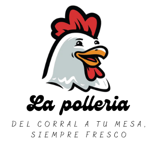
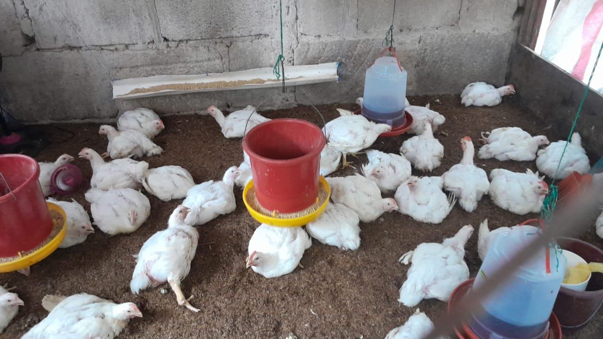
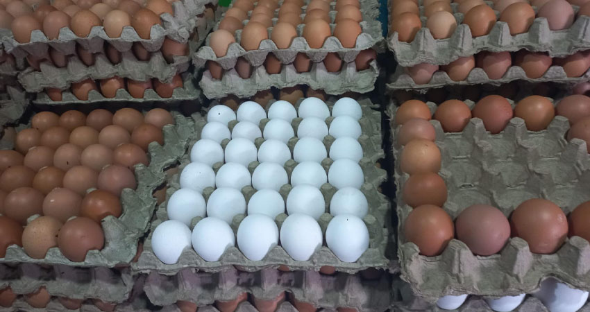

En La Pollería creemos que la calidad, la confianza y la atención personalizada son la base para construir relaciones duraderas con nuestros clientes. Nacimos con el propósito de ofrecer los mejores pollos de manera honesta, accesible y con un toque humano.
Detrás de cada entrega hay un equipo comprometido que pone el corazón en lo que hace. Somos personas apasionadas por la crianza y distribución de pollos, trabajando día a día para que cada cliente se lleve una experiencia única.
Directora General
Supervisa cada etapa del proceso productivo, desde la selección de aves hasta la distribución final.
Director General
Lidera la empresa con visión estratégica y compromiso hacia la calidad.
En La Pollería trabajamos con la misión de ofrecer pollos de granja de la más alta calidad, garantizando frescura, bienestar animal y un servicio confiable. Más que vender, buscamos crear relaciones basadas en confianza, transparencia y compromiso. Nuestra pasión se refleja en cada entrega, porque creemos que una buena comida comienza con ingredientes honestos.
En La Pollería creemos que la confianza se gana con frescura, calidad y honestidad. Por eso, nos comprometemos a ofrecer pollos frescos y naturales, provenientes de granjas responsables que garantizan el bienestar animal y el cuidado del entorno. Cada producto que llega a tu mesa refleja nuestro esfuerzo por mantener prácticas saludables, un control riguroso de calidad y un servicio atento que responde con rapidez y calidez. Nos mueve el deseo de llevar sabor auténtico a los hogares y negocios locales, impulsando el consumo responsable y fortaleciendo los lazos con nuestra comunidad. Desde la selección del pollo hasta la entrega final, trabajamos con pasión para que en cada pedido encuentres lo que más valoras: frescura, confianza y el verdadero sabor del corral a tu mesa.

Nuestro pollo fresco es la elección ideal para sus comidas. Seleccionamos las mejores aves, criadas bajo estrictos estándares de calidad y nutrición.

Cajillas y docenas disponibles. Seleccionamos únicamente los huevos de gallinas criadas con el máximo bienestar y una alimentación natural y balanceada.
Productos entregados en óptimas condiciones para conservar su sabor.
Protocolos estrictos en cada fase de la producción.
Asesoría para pedidos grandes y seguimiento post-venta.
Será un placer atenderte. Contáctanos por el canal que prefieras.
📞 Teléfono: +505 8963-3922
✉️ Correo: lapolleria123@gmail.com
📍 Ubicación: Rivas, Nicaragua